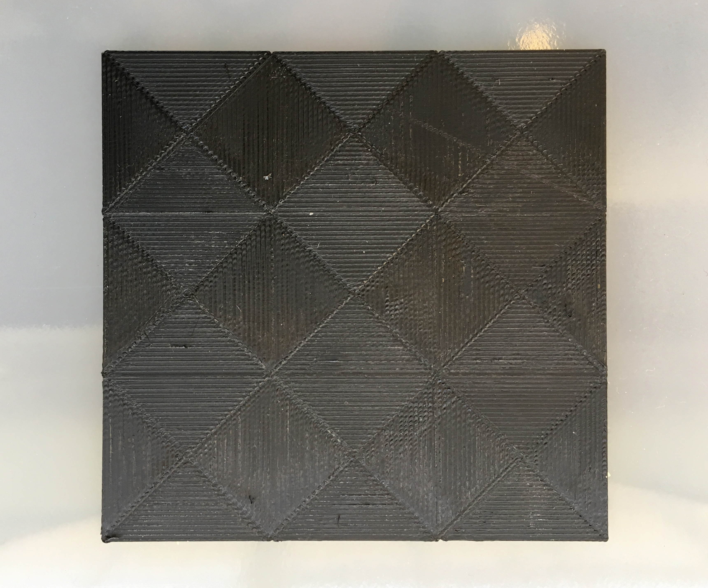

Composite fiber generator


Grasshopper script for composite fiber generation (Summer 2017)
A small python script written to for Rhino Grasshopper to generate composite sheets given input curves and fiber orientations per layer. This tool was used for part of my thesis to override the infill pattern of 3D printing slicing software. The script divides the input geometry in such a way that the printing path and infill can be controlled by the user
This script takes input curves and transforms them in composite sheets with varying fiber orientations. When selecting multiple curves the first selection corresponds with the curve that enclose all curves where the following are used to extrude cuts out of the sheet.
Download